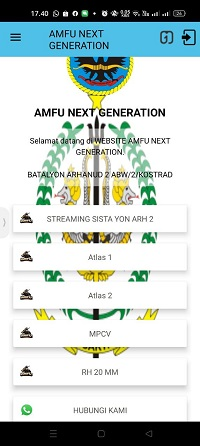

adalah platform pembuatan aplikasi Android tanpa perlu kemampuan pemrograman. Dirancang untuk pelaku UMKM, wiraswasta, dan pemilik usaha kecil, Jagel memungkinkan pengguna untuk membuat berbagai aplikasi bisnis seperti toko online, portofolio, dan brosur digital dengan cepat. Dengan antarmuka yang sederhana, pengguna bisa memilih template, menyesuaikan tampilan, dan langsung menghasilkan APK untuk diunggah ke Google Play Store atau dibagikan langsung.
Platform ini menawarkan paket mulai dari gratis hingga berbayar dengan opsi kustomisasi lebih lanjut. Filosofi Jagel adalah “SIP”: Simple, Instant, dan Profitable. Artinya, Jagel berfokus pada kemudahan penggunaan, kecepatan dalam pembuatan aplikasi, serta peluang untuk menghasilkan profit melalui aplikasi yang dibuat
Jagel.app adalah website yang hampir sama dengan APPGEYSER namun aplikasi ini lebih komplek,
-Pada dasarnya aplikasi ini di buat untuk membuat aplikasi jual beli, Namun kami modifikasi sehingga dapat menjadi aplikasi yang diinginkan.
-Terdapat pula template yang di sediakan aplikasi.
-Namun aplikasi ini untuk tool yang gratis (free) hanya sebagian tool , apabila ingin menggunakan tool lebih banyak (Berbayar tergantung paket).
-Kita juga dapat menjadikan aplikasi kita ini sebagai website( namun hanya sesui aplikasi).
-Ketika kita ingin mendownload hasil kejaan kita, harus menunggu Surve dari pihak JAGEL.app.
-Website ini tidak menggunakan code apapun. contoh =>
Ababila kita ngin menampilkan link di aplikasi( menjadi suatu tombol) maka kita tinggal memilih tool yang tersedia.
Aplikasi AMFU NG adalah Aplikasi yang berfungsi untuk sebagai sarana mengintegrasikan link AMFU, agar dapat mudah di akses melalui aplikasi mobile. Contoh penerapan :
Pada kegiatan Menembak senjata berat apabila atasan atau rekan-rekan yang ada di homebase ingin melihat penembakan rudal secara live melalui aplikasi. namun kami dapat membatasi dan memngeluarkan orang yang tidak punya kapasitas di kegiatan tersebut. kami membuat aplikasi ini menggunakan

Aplikasi ini sebagai sarana untuk memantau keadaan Alutsista dan terdapat panduan perbaikan terhadap alutsista tersebut.
Aplikasi ini juga menampilkan data penggantian oli alutsista dan rantis yang ada di satuan.
Contoh penerapan :
Untuk mengetahui kesiapan dan kelayakan dari senjata pokok .
Apabila ada trobel pada saat pergerakan kita dapat membuka panduan hanya melalui mobile.
kami membuat aplikasi ini menggunakan
kontak kami:
Email: siharalapalap@gmail.com